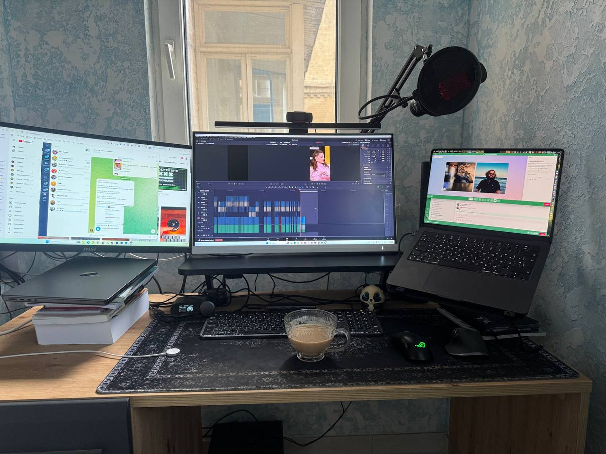
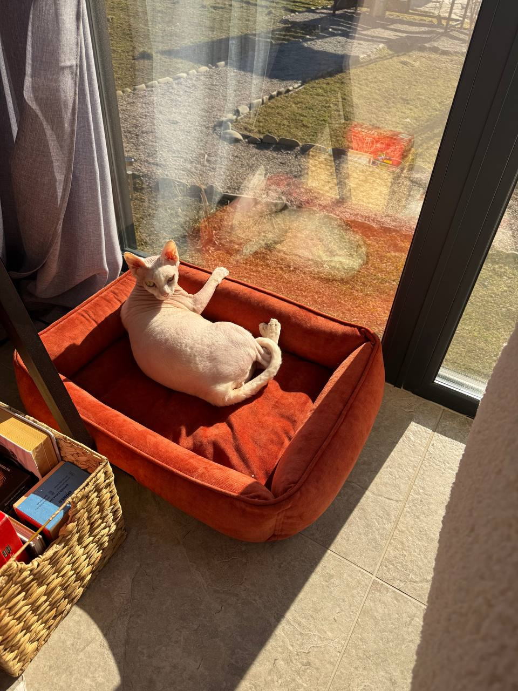

Про мене
Привіт! Це мій особистий сайт, який я створюю під час навчання верстки. Тут можна трохи дізнатися про мене, мій досвід і те, чим мені цікаво займатися.
Чому я вивчаю верстку
Мені подобається, що у веброзробці можна досить швидко побачити результат своєї роботи. Спочатку є порожня сторінка, потім з’являються заголовки, текст, зображення та посилання. Поступово все це складається в повноцінний сайт, який можна відкрити у браузері й показати іншим.
Зараз я проходжу курс і знайомлюся з основами HTML та CSS. Вчуся будувати структуру сторінок, оформлювати елементи й розуміти, як вони взаємодіють між собою. Хочеться не просто повторювати приклади з уроків, а розбиратися, чому певне рішення працює і як його можна використати у власному проєкті.
Найбільше мене цікавить технічна частина. Коли потрібно обирати між написанням великого тексту про себе та роботою над сторінкою, я швидше відкрию редактор коду. Мені цікавіше зібрати навігацію, налаштувати відступи або розібратися з розташуванням блоків. Саме тому цей сайт для мене — передусім можливість попрактикуватися.
Як я навчаюся
Мені зручніше розбиратися з новим на конкретних прикладах. Прочитати пояснення корисно, але після цього хочеться самостійно щось змінити й подивитися, що станеться. Іноді навіть невелика правка допомагає краще зрозуміти тему, ніж довге теоретичне пояснення.
Звичайно, не все виходить із першого разу. Буває, що елемент стоїть не там, де я очікую, або сторінка виглядає зовсім інакше, ніж у задумі. Тоді доводиться повертатися до коду, перевіряти деталі та шукати причину. Це теж частина навчання: з кожною такою ситуацією стає трохи зрозуміліше, як усе працює.
Що допомагає мені навчатися
Під час навчання я намагаюся дотримуватися кількох простих правил:- Одразу перевіряти нові знання на практиці.
- Розділяти великі завдання на невеликі кроки.
- Самостійно шукати причину помилки.
- Повертатися до складних тем і пробувати ще раз.
- Зберігати свої роботи, щоб бачити прогрес.
Моє робоче місце
Навіть для невеликого навчального проєкту хочеться мати зручне місце, де можна зосередитися. Тут я працюю над завданнями з курсу та перевіряю, як мої сторінки виглядають у браузері.

Невідʼємна частина мого робочого сетапу це мій лисий котик, любить сидіти на столі, лягати на ноги і лащитись заважати трошки під час роботи

Про цей сайт
Цей сайт — одна з моїх навчальних робіт. На ньому я практикую створення кількох пов’язаних сторінок, роботу з текстом і побудову зрозумілої навігації.
Мені хочеться, щоб він був простим і зручним: щоб потрібну інформацію можна було легко знайти, текст було приємно читати, а сторінки виглядали цілісно.
З часом тут можуть з’явитися інші роботи та невеликі проєкти. Буде цікаво повернутися до цього сайту пізніше й подивитися, з чого все починалося.